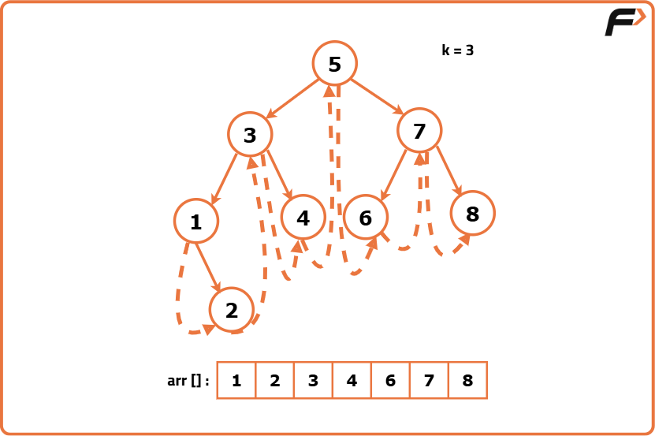
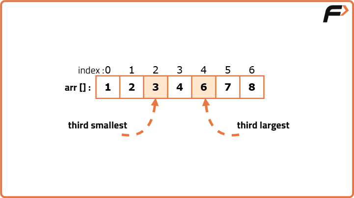
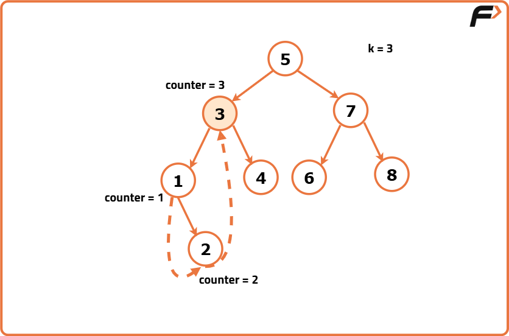
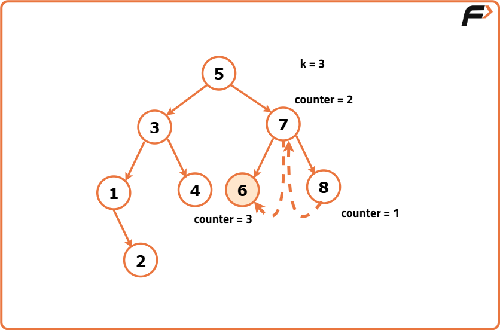

Kth largest/smallest element in Binary Search Tree
Problem Statement:
Given the root node of a binary search tree (BST) and an integer k.
Return the kth smallest and largest value (1-indexed) of all values of the nodes in the tree.
Return the 1st integer as kth smallest and 2nd integer as kth largest in the returned array.
Examples
Example 1: Input: root = [3, 1, 4, null, 2], k = 1 Output: [1, 4] Explanation: The 1st smallest value in the given BST is 1. The 1st largest value in the given BST is 4. Example 2: Input: root = [5, 3, 6, 2, null, null, null, 1], k = 3 Output: [3, 3] Explanation: The 3rd smallest value in the given BST is 3. The 3rd largest value in the given BST is 3.
Disclaimer: Here is the practice link to help you assess your knowledge better. It's highly recommend trying to solve it before looking at the solution.
Brute Force
Algorithm
- Begin by creating a list or vector to store the values of the nodes present in the Binary Search Tree (BST).
- Perform an inorder traversal of the BST using the depth-first search (DFS) technique, adding each node's value to the previously initialized array.
- To find the Kth smallest element:
- Retrieve the element at index
k - 1in the sorted array (considering array indexing starts from zero).
- Retrieve the element at index
- To find the Kth largest element:
- Retrieve the element at index
array.length - kin the sorted array.
- Retrieve the element at index
- Finally, return a pair containing the Kth smallest and the Kth largest elements.


Code
#include <bits/stdc++.h>
using namespace std;
// Definition for a binary tree node.
struct TreeNode {
int data;
TreeNode *left;
TreeNode *right;
TreeNode(int val) : data(val), left(nullptr), right(nullptr) {}
};
class Solution {
public:
// Helper function to perform an in-order traversal of the BST
void inorderTraversal(TreeNode* node, vector<int>& values) {
if (node) {
inorderTraversal(node->left, values);
values.push_back(node->data);
inorderTraversal(node->right, values);
}
}
vector<int> kLargesSmall(TreeNode* root, int k) {
// Vector to store the node values
vector<int> values;
// Perform in-order traversal and collect values
inorderTraversal(root, values);
// Find the kth smallest and kth largest values
int kth_smallest = values[k - 1];
int kth_largest = values[values.size() - k];
return {kth_smallest, kth_largest};
}
};
// Main method to demonstrate the function
int main() {
// Constructing the tree: [3, 1, 4, null, 2]
TreeNode* root = new TreeNode(3);
root->left = new TreeNode(1);
root->left->right = new TreeNode(2);
root->right = new TreeNode(4);
Solution solution;
int k = 1;
vector<int> result = solution.kLargesSmall(root, k);
cout << "[" << result[0] << ", " << result[1] << "]" << endl; // Output: [1, 4]
return 0;
}Complexity Analysis
Time Complexity: O(N), where N is the number of nodes in the BST. Because the code performs an in-order traversal of the BST, which requires O(N) time.
Space Complexity: O(N), since the code stores all the node values in a list.
Optimal Approach
Algorithm
- Initialize an array to store the values of the nodes within the Binary Search Tree (BST).
- Execute an inorder traversal of the BST, adding each node's value to the array as you visit it. Use a counter to monitor the progress of the traversal, especially focusing on the Kth position. This eliminates the need for an additional data structure.
- To determine the Kth smallest element:
- Observe the counter during the traversal. Upon reaching the value of K, record the current node's value as the Kth smallest.
- To determine the Kth largest element:
- Conduct a reverse inorder traversal (right subtree first, then the current node, followed by the left subtree).
- Increment a counter as each node is visited. When the counter reaches K, the current node's value is the Kth largest.
- Return the values corresponding to the Kth smallest and Kth largest elements, as determined by the above steps.


Code
#include <bits/stdc++.h>
using namespace std;
// Definition for a binary tree node.
struct TreeNode {
int data;
TreeNode *left;
TreeNode *right;
TreeNode(int val) : data(val), left(nullptr), right(nullptr) {}
};
class Solution {
public:
// Function to find the kth smallest element
int kthSmallest(TreeNode* root, int k) {
this->k = k;
this->result = -1;
inorder(root);
return result;
}
// Function to find the kth largest element
int kthLargest(TreeNode* root, int k) {
this->k = k;
this->result = -1;
reverse_inorder(root);
return result;
}
// Function to return kth smallest and kth largest elements
vector<int> kLargesSmall(TreeNode* root, int k) {
return {kthSmallest(root, k), kthLargest(root, k)};
}
private:
int k;
int result;
// Helper function for inorder traversal
void inorder(TreeNode* node) {
if (node != nullptr) {
inorder(node->left);
if (--k == 0) {
result = node->data;
return;
}
inorder(node->right);
}
}
// Helper function for reverse inorder traversal
void reverse_inorder(TreeNode* node) {
if (node != nullptr) {
reverse_inorder(node->right);
if (--k == 0) {
result = node->data;
return;
}
reverse_inorder(node->left);
}
}
};
// Main method to demonstrate the function
int main() {
// Constructing the tree: [3, 1, 4, nullptr, 2]
TreeNode* root = new TreeNode(3);
root->left = new TreeNode(1);
root->left->right = new TreeNode(2);
root->right = new TreeNode(4);
Solution solution;
int k = 1;
vector<int> result = solution.kLargesSmall(root, k);
// Output the result
cout << "[" << result[0] << ", " << result[1] << "]" << endl; // Output: [1, 4]
return 0;
}Complexity Analysis
Time Complexity: O(N), where N is the number of nodes in the binary tree. The reason is that in the worst-case scenario, the inorder and reverse inorder traversals visit each node exactly once.
Space Complexity: O(H), where H is the height of the binary tree.